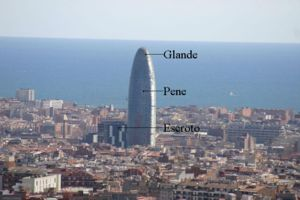

Torre Agbar
 De: La Frikipedia, la enciclopedia extremadamente seria.
De: La Frikipedia, la enciclopedia extremadamente seria.
| De la serie anatomía para todos:
|
| Torre Agbar
|
| 
|
| Torre Agbar según tu libro de anatomía de 3º de Primaria.
|
|
| Nombre científico
|
Enormus penis torreónicus
|
| Localización
|
Barcelona
|
| Función principal
|
Ocupar espacio
|
| Función secundaria
|
Ocupar aún más espacio
|
| Aspecto general
|
Pues no sé... ¿un pene?
|
| Número habitual
|
Bastantes visitantes femeninos y algunos "masculinos"
|
| Vital / no vital
|
Por su forma, muy vital
|
| Nivel de frikismo
|
Alto
|
| Ejemplo de poseedor
|
Barcelona
|
«¡Joder! ¡Barcelona está empalmada!»
~ Tú al ver la torre Agbar.
«Nene, yo quiero una de esas...»
~ Tu novia humillándote frente a la torre Agbar.
La torre Agbar es una construcción vanguardística de estilo "verguiano" o "neotrancal". Es uno de los rascacielos más grandes de Barcelona, constando de 144 metros de alto y 34 plantas. Aunque si bien es cierto, cuando llega la primavera y las mujeres empiezan a enseñar sus encantos, la torre aumenta su tamaño en dos plantas, no obstante todos estos datos son irrelevantes pues bien es sabido que el tamaño no importa.
Ubicación
Su ubicación está en la plaza de las Glorias Catalanas ("zona inguinal" de la capital), llamada así por las marujas desatadas que pasaban por el lugar y que comprobaban la magnificencia del edificio (después morían por exceso de adrenalina o por depresión al comparar la estructura con la estructura de sus maridos).
Diseño
Arquitectos
- Santiago Calatrava: Afamado arquitecto emo, según se refleja en su gusto por las estructuras de afilado metal o cristal, constituyendo sus edificios el sueño de cualquier emo de pro.
- Paris Hilton: La Torre Agbar fue diseñada en su mayor parte por Paris Hilton, experta en este tipo de estructuras como bien refleja en su obra literaria “The diferents kinds of cocks in the World” (Paris Hilton, Editorial Promiscuas S. L. 2003).
- Un equipo serio y profesional de arquitectos cualificados y competentes: Fueron los que menos hicieron.
Construcción
Posteriormente fue construida en duro hormigón para su base y erecto y firme metal para su sensible cúpula por profesionales del sector de este tipo de construcción (sin olvidar el recubrimiento de fino cristal que posee todo el edificio, pues la protección es lo primero).
Teorías sobre su construcción

Foto de la torre Agbar publicada en una revista árabe (censurada por Alláh).
- Teoría de la Estatua de Apolo: Se especula que en los inicios del proyecto los arquitectos planeaban realizar una gigantesca estatua del dios griego Apolo, pero el presupuesto solo dio para hacer una parte del cuerpo de dicha divinidad (es evidente cual). El resto se quedó en el camino, debido al poco gusto que los catalanes tienen por gastar dinero. No será la primera vez que dejan una construcción a medias, véase la Sagrada Familia, el AVE, etc.
- Teoría del "Caganer": (-5 puntos al autor por escribir en catalán) Imagínate lo que hay y lo que falta para concluir de que tiene forma el edificio (por si tienes poca imaginación se trata de un truño).
- Teoría del Supositorio: Consciente de la fiebre de poder que sufre EEUU, los españoles decidimos construirle un gran supositorio lleno de paracetamol para bajarle los humos a George W. Bush Por desgracia, cada vez que descargan el paracetamol dentro de la estructura, las limpiadoras se ponen a barrer.
- Teoría del Festival Erótico de Barcelona: Algunos dicen que la torre Agbar era una pequeña estructura de tres flácidas plantas, pero en cuanto se celebró el festival erótico anual con masivas dosis de porno, la torre aumento considerablemente su tamaño. Otra teoría derivada señala a la fábrica de Viagra que hay por sus alrededores, se ve que el humillo que sale de sus chimeneas te pone palote, por lo que miles de viejos catalanes han emigrado de obras vecinas a dicho entorno ahorrándose así un dineral en fármacos, por supuesto la torre no va a ser menos.
- Teoría de la Vibración: Algunos opinan que este edificio constituye uno de los más descarados casos de publicidad subliminal, responsabilidad de los fabricantes de esos objetos que producen placer a algunas féminas. Los grandes machos de este País (Humberto Janeiro e hijo) ya están planeando destruirlo antes de que deje obsoleto al macho español.
¿Sabías que?
- El 3 de Agosto de 2006 la torre fue escalada por el francés Alain Robert, considerándose esta hazaña la paja más grande de la Historia.
- En Junio del 2005 (¡premio!), Nacho Vidal se quedó esperando a su equipo de rodaje en un bar, ya que estos por una determinada confusión fueron a grabar a la plaza de las Glorias Catalanas (ata cabos).
- Si no sabes que es una metáfora, no vas a pillar que estamos comparando la torre Agbar con una polla.
- Si no sabías interpretar metáforas ahora mismo estás escandalizado.
- Como buenas guarras, las jessis deben peregrinar al menos una vez en la vida a la torre Agbar (véase cultura cani).
- La "Vía Tello" conduce hasta la Torre Agbar.
Véase también
Autor(es):
- Fordus
- Epikurolibre
- El Sevillano
- Alex el Mono
- The Painkiller 666
- Alfredito
- Mierdashi
- Tuwantoo
- Genericool
- Dancob
Frikipedia 2005-2016, Licencia
GFDL 1.2 - Extraído por FrikiLeaks